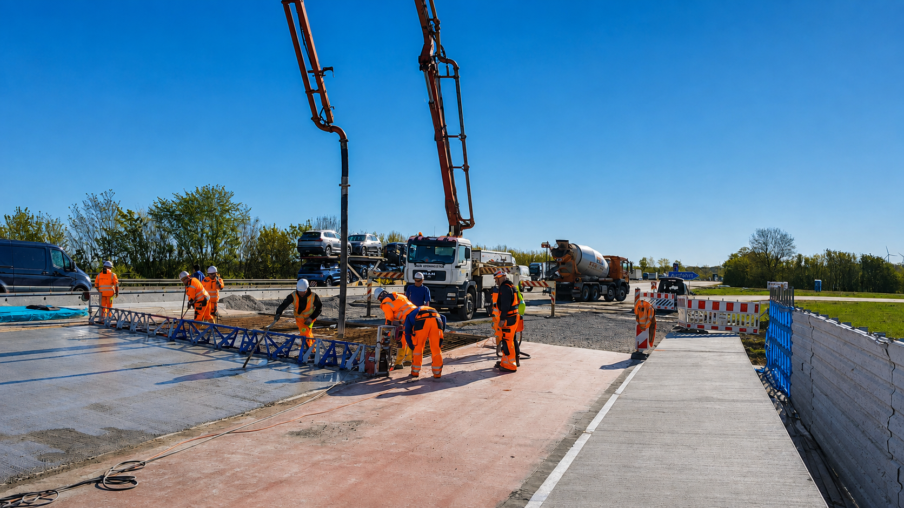

Betonpumpe in Paderborn.
RN Torwesten Transporte koordiniert Betonpumpeneinsätze von Salzkotten aus für Baustellen in Paderborn und im Kreis Paderborn. Anfrage, Termin und Einsatzbedingungen stimmen wir direkt mit Ihnen ab.

Betonpumpendienst für Paderborn und den Kreis.
Bei einem Pumpeneinsatz müssen Baustellenzufahrt, Aufstellfläche, Betonmenge und Einbauzeitpunkt zusammenpassen. RN Torwesten Transporte klärt diese Punkte vorab direkt mit Ihnen, damit der Einsatz auf der Baustelle sauber vorbereitet werden kann.
Betonpumpe in rund 60 Sekunden anfragen.
Nur die wichtigsten Angaben. Danach öffnet sich WhatsApp mit einer fertigen Anfrage an RN Torwesten Transporte.
Was möchten Sie betonieren?
Wählen Sie den Einsatz, der am besten passt.
Wo und wann wird die Pumpe benötigt?
Ungefähre Angaben reichen für die erste Einschätzung.
Wie können wir Sie erreichen?
Danach wird Ihre fertige Anfrage in WhatsApp geöffnet.
Diese Angaben helfen bei der ersten Abstimmung.
Für die Anfrage reichen zunächst Baustellenort, gewünschter Termin, ungefähre Betonmenge und eine kurze Angabe dazu, was betoniert werden soll. Wenn Zufahrt oder Aufstellfläche eingeschränkt sind, kann das direkt mit angegeben werden.
Betonpumpe für Paderborn anfragen.
Für eine schnelle Abstimmung die Schnellanfrage nutzen oder direkt anrufen.
0173 72 75 165Schnellanfrage öffnen